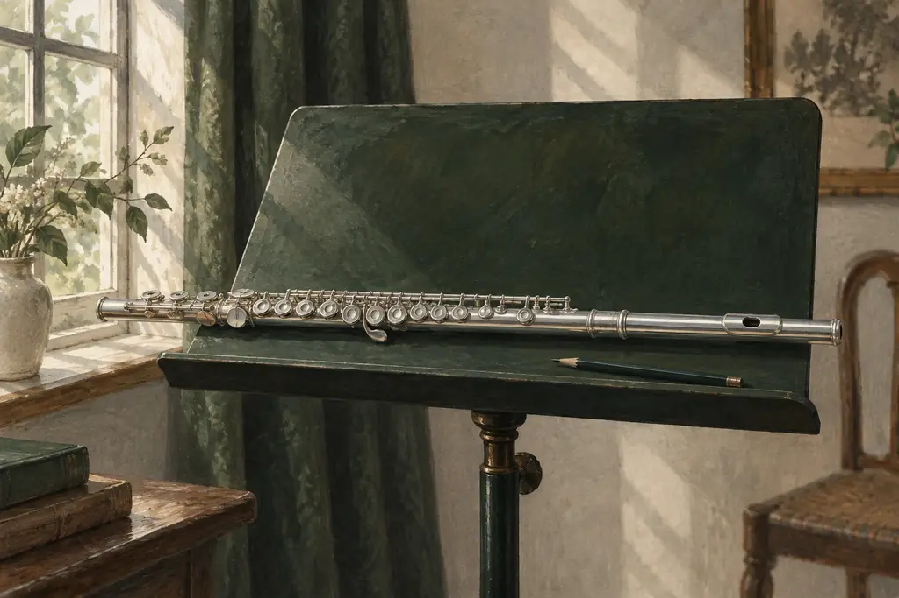
把一個音 聽清楚， 讓音樂慢慢走近。
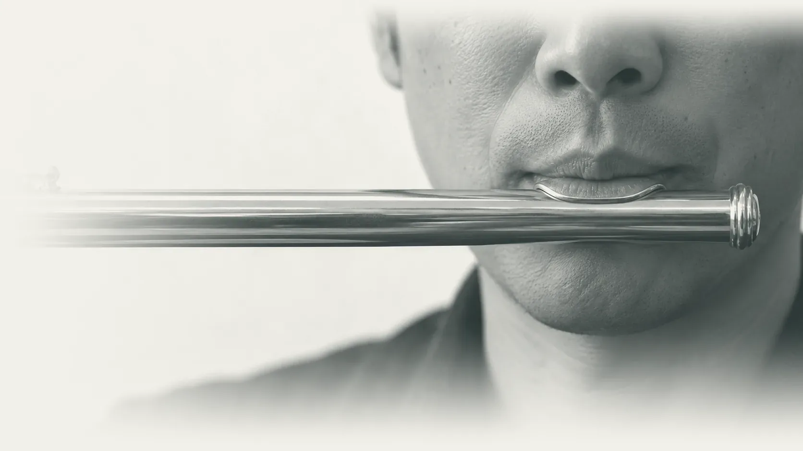
A4 · 440 Hz · 長笛按住不放；鍵盤用空白鍵，放開便停
四種聲音，各有一條學習的路

張家詠老師 Oliver Cheung
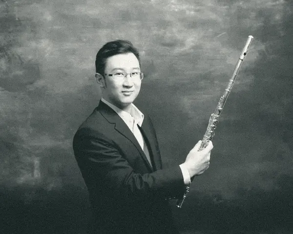
「若音樂無法讓人本身感到快樂，學習音樂的路就不容易走得長久。」
畢業後致力於音樂教育二十年，先後擔任四十多間中小學的竹笛及指揮工作，亦與百多間機構合辦音樂課程，至今教授學員數千人。
- 20年
- 音樂教育
- 40+
- 間中小學竹笛及指揮
- 100+
- 間合作機構
- 數千
- 位學員
舞台與課室
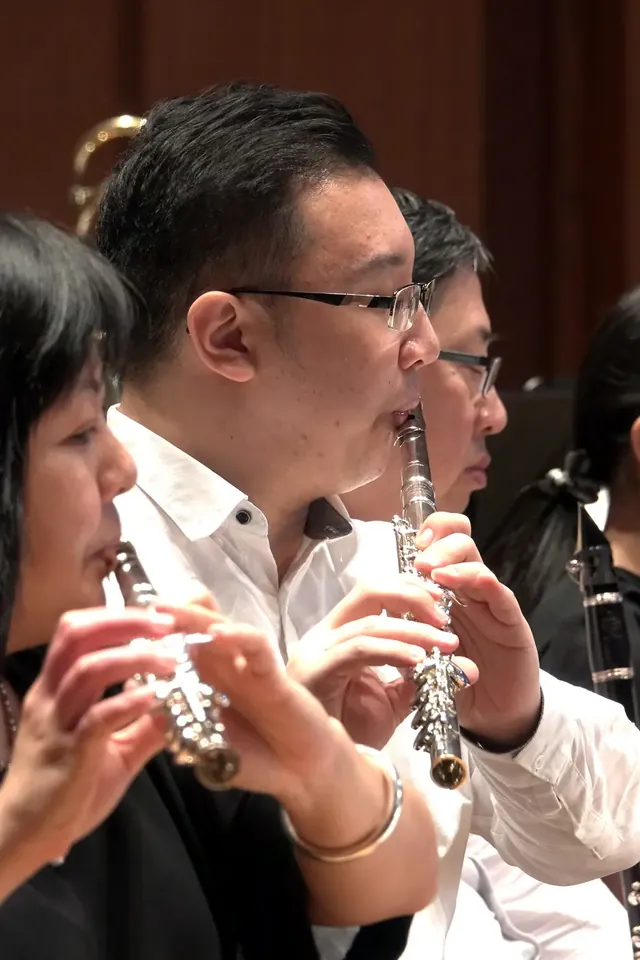
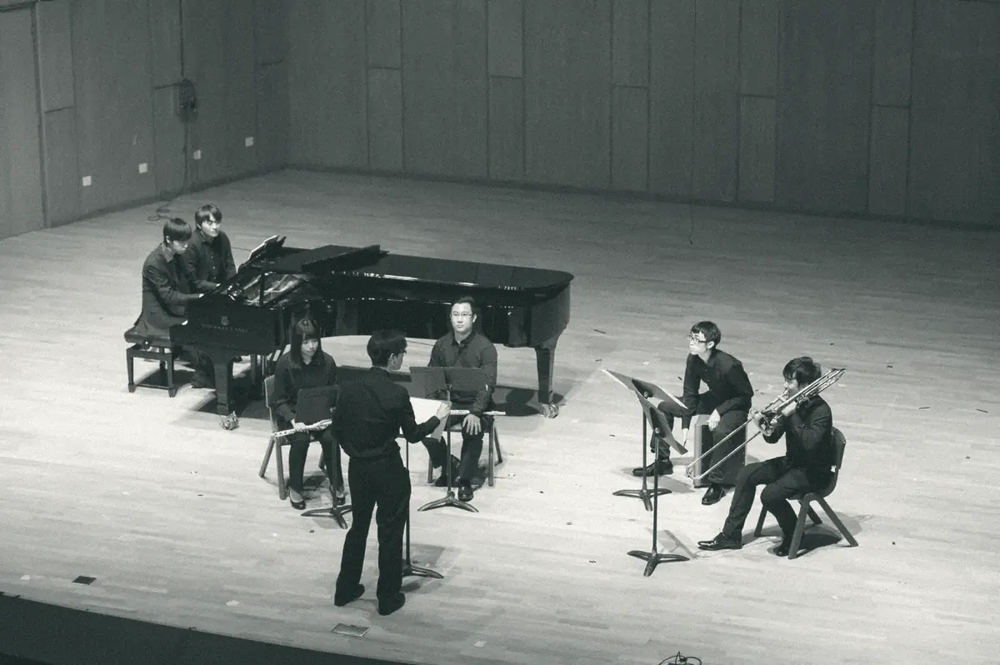
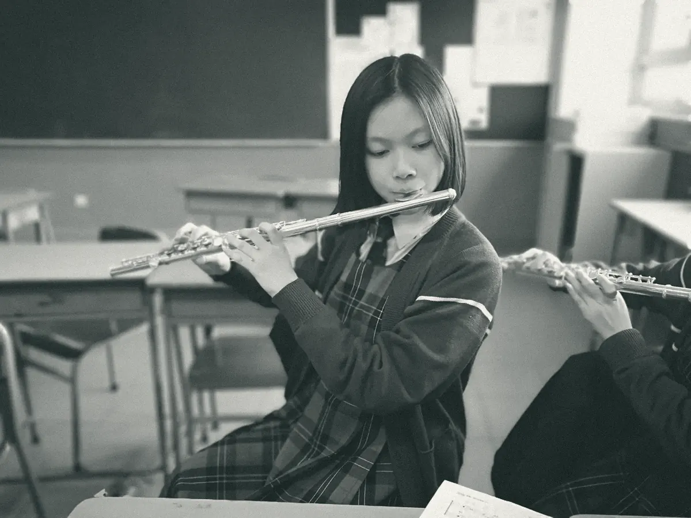
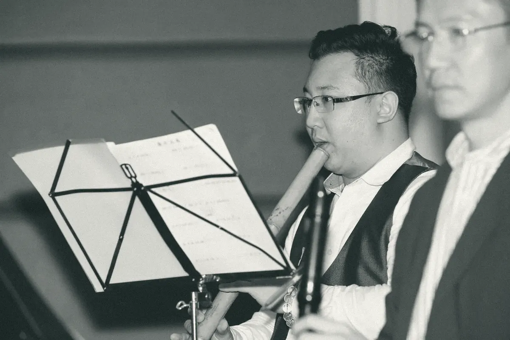
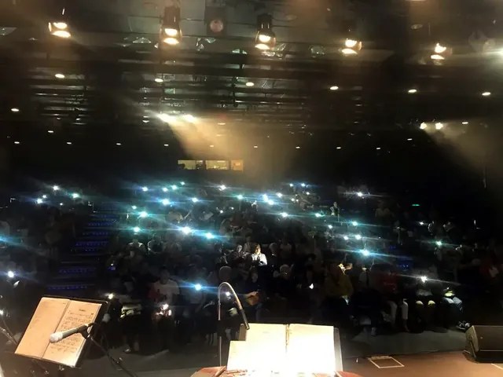
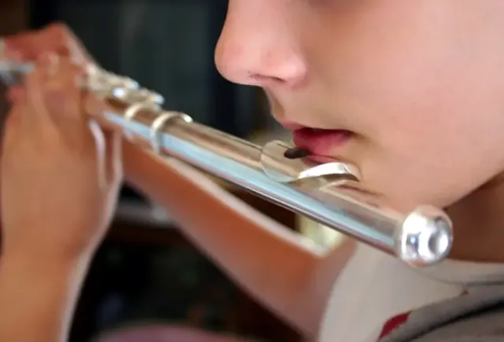
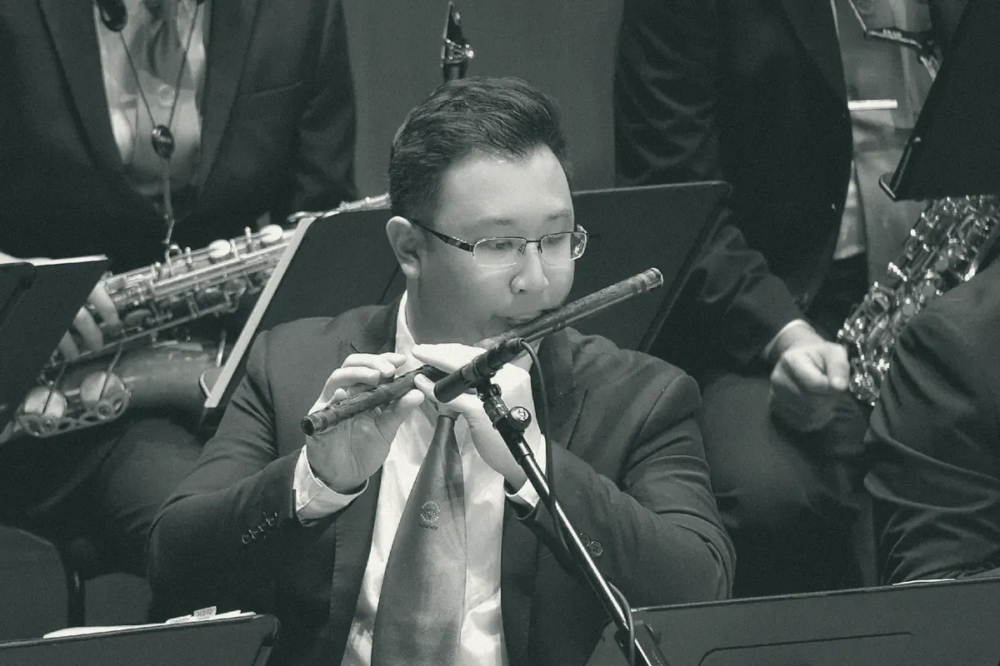
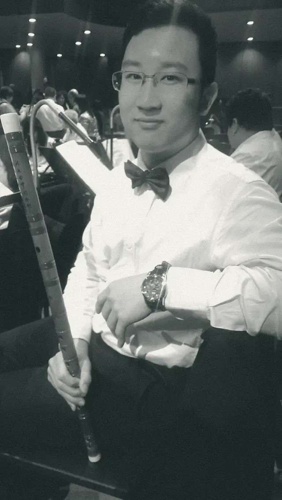
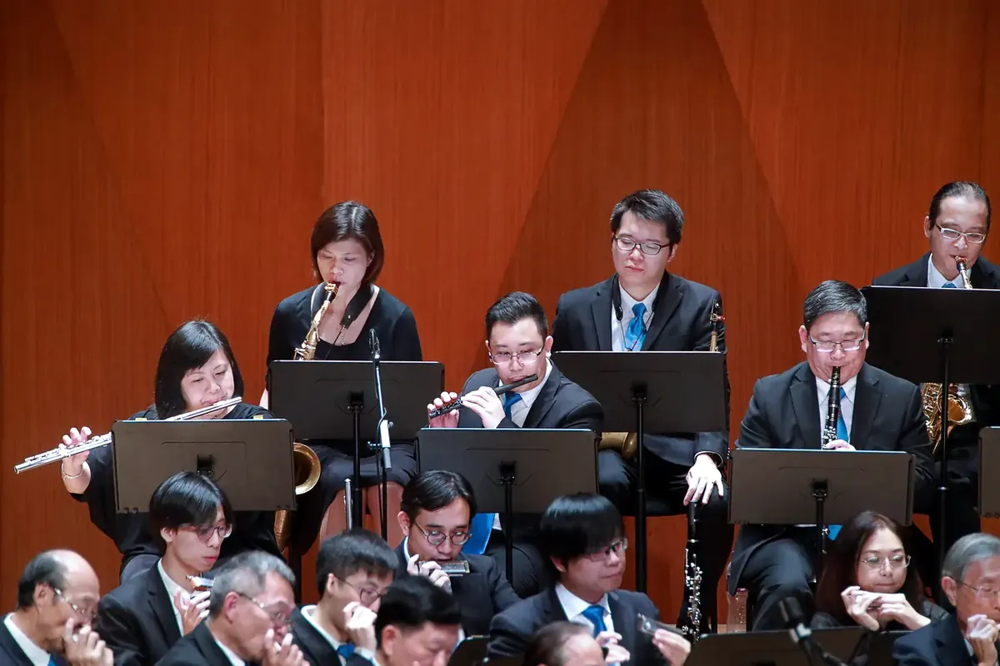
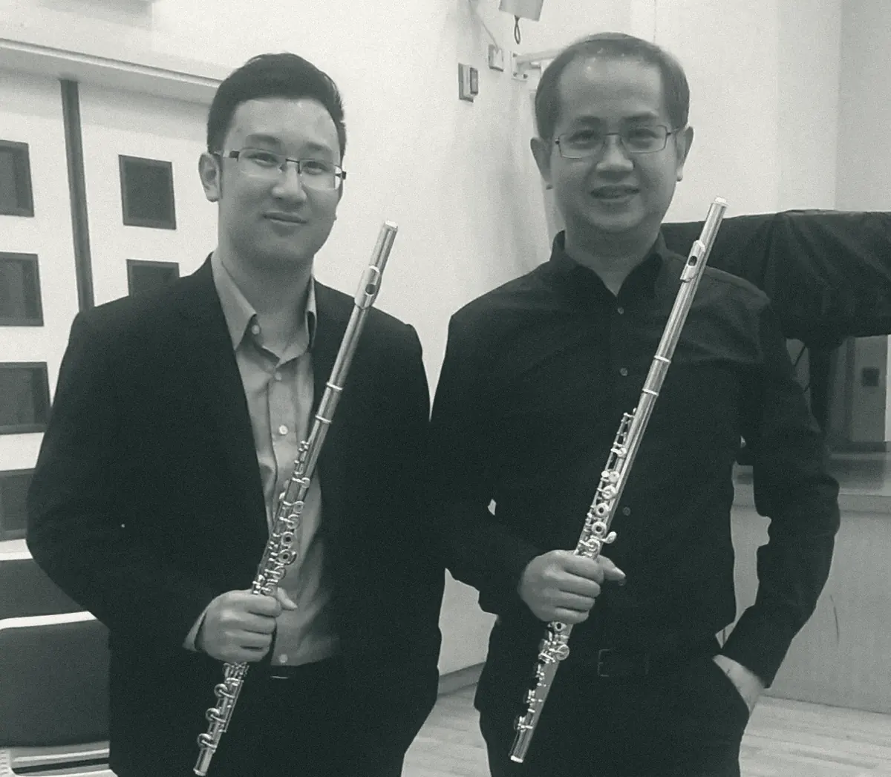
找到你的開始
課後的練習室
節拍器 · 現在就可以試
每分鐘拍數
調音器、節拍器、長笛指法表和長音計時，打開手機就可以用。還有張老師為課堂做的打譜軟件「譜間」，以及長笛紙牌。
200 篇音樂手記
從樂器入門、樂理、練習方法到家長陪練。選一個今天遇到的問題，由那裏讀起。
瀏覽全部文章從你現在的程度開始。
把想學的樂器、已有經驗及可上課時間告訴張老師，一起討論合適的學習安排。